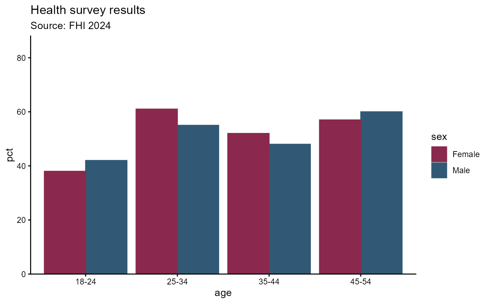
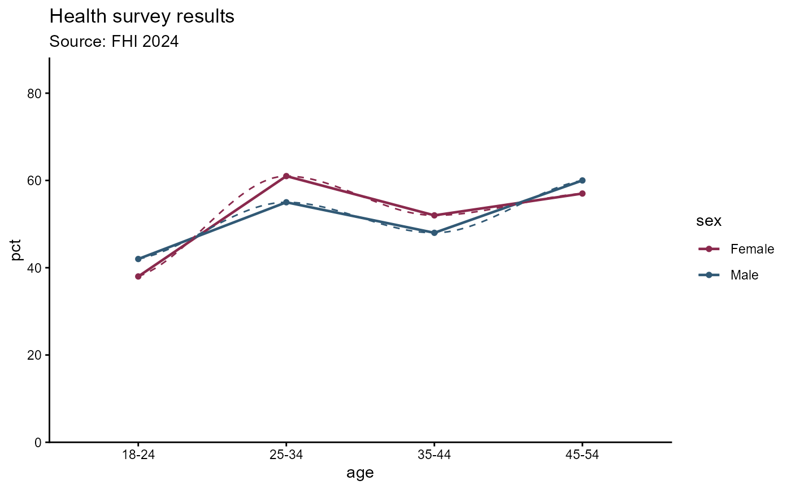
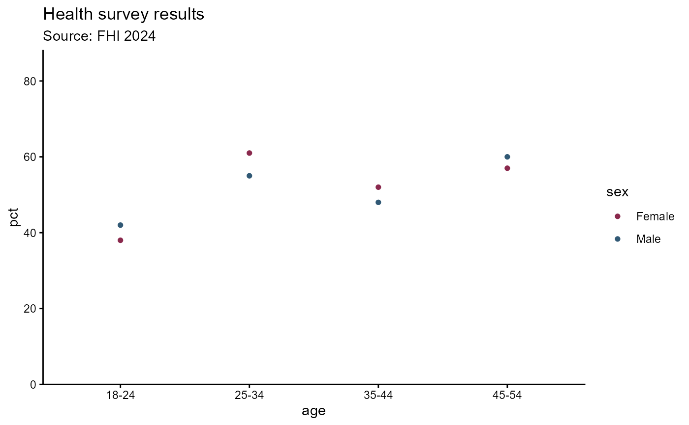
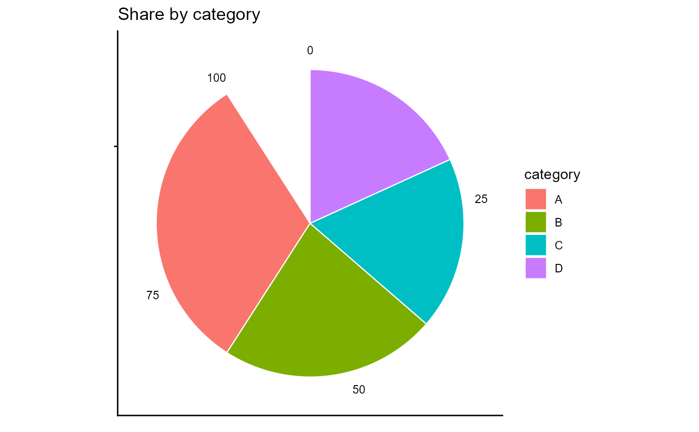

Renders a hd_spec and hd_opts pair using the selected backend and
geometry. This is the central function of the package - everything else
feeds into or flows out of hd_make().
Usage
hd_make(
spec,
type = "column",
opts = NULL,
backend = "highcharter",
use_js = TRUE,
module = FALSE,
...
)Arguments
- spec
- type
Character. Geometry name - one of
list_geoms():"column","line","scatter","arearange","pie", or any custom geometry added withregister_geom().- opts
A hd_opts object or
NULL(uses all defaults). Controls title, subtitle, caption, ylim, yint, flip, per-figure colours, and highcharter theme.- backend
Character. Rendering engine -
"highcharter"(default, interactive) or"ggplot2"(static), or any engine added withregister_backend().- use_js
Logical. When
TRUE(default) injects a hover-bandhtmlwidgets::JS()callback viapoint.events.mouseOver/Out. Tooltips, accessibility module, and all other Highcharts declarative features are always present. SetFALSEfor clean, no-custom-JS widgets. Ignored by the ggplot2 backend.- module
Use available modules js from CDN https://api.highcharts.com/highcharts/
- ...
Extra arguments forwarded to the geometry function. Required arguments (e.g.
ymin,ymaxfor"arearange") must be supplied here.
Value
A highchart widget (highcharter backend) or ggplot object
(ggplot2 backend), invisibly wrapped so knitr/Shiny render it
automatically.
Workflow
spec <- hd_spec(df, x = "age", y = "pct", group = "sex", n = "n")
opts <- hd_opts(title = "Health survey", ylim = c(0, 80))
hd_make(spec, "column", opts) # highcharter (default)
hd_make(spec, "column", opts, backend = "ggplot2") # static ggplot2
hd_make(spec, "line", opts, smooth = TRUE) # smooth spline
hd_make(spec, "pie", opts) # pie / donutExamples
df <- data.frame(
age = rep(c("18-24", "25-34", "35-44", "45-54"), each = 2),
sex = rep(c("Male", "Female"), 4),
pct = c(42, 38, 55, 61, 48, 52, 60, 57),
n = c(120, 115, 200, 210, 180, 175, 160, 155)
)
spec <- hd_spec(df, x = "age", y = "pct", group = "sex", n = "n")
opts <- hd_opts(title = "Health survey results",
subtitle = "Source: FHI 2024",
ylim = c(0, 80))
# \donttest{
# -- Interactive charts (highcharter) --------------------------------------
hd_make(spec, "column", opts)
hd_make(spec, "line", opts, smooth = TRUE)
hd_make(spec, "line", opts, smooth = FALSE, dot_size = 6)
hd_make(spec, "scatter")
# Pie chart - group is ignored; x = label, y = value
pie_df <- data.frame(category = c("A","B","C","D"),
value = c(35, 25, 20, 20))
pie_spec <- hd_spec(pie_df, x = "category", y = "value")
pie_opts <- hd_opts(title = "Share by category")
hd_make(pie_spec, "pie", pie_opts)
hd_make(pie_spec, "pie", pie_opts, inner_size = "50%") # donut
# Arearange - requires ymin + ymax in ...
df2 <- cbind(df, lo = df$pct - 5, hi = df$pct + 5)
spec2 <- hd_spec(df2, "age", "pct", group = "sex")
hd_make(spec2, "arearange", opts, ymin = "lo", ymax = "hi")
# -- Disable JS hover band -------------------------------------------------
hd_make(spec, "column", opts, use_js = FALSE)
# -- Static ggplot2 versions -----------------------------------------------
hd_make(spec, "column", opts, backend = "ggplot2")

hd_make(spec, "line", opts, backend = "ggplot2")
#> Warning: span too small. fewer data values than degrees of freedom.
#> Warning: pseudoinverse used at 0.985
#> Warning: neighborhood radius 2.015
#> Warning: reciprocal condition number 0
#> Warning: There are other near singularities as well. 4.0602
#> Warning: span too small. fewer data values than degrees of freedom.
#> Warning: pseudoinverse used at 0.985
#> Warning: neighborhood radius 2.015
#> Warning: reciprocal condition number 0
#> Warning: There are other near singularities as well. 4.0602

hd_make(spec, "scatter", opts, backend = "ggplot2")

hd_make(pie_spec, "pie", pie_opts, backend = "ggplot2")

# -- Reuse spec with different presentation --------------------------------
opts_no <- hd_opts(title = "Helseundersøkelse", subtitle = "Alle aldre")
hd_make(spec, "column", opts_no)
# -- Save outputs ----------------------------------------------------------
hd_save(hd_make(spec, "column", opts), "column.html")
hd_save(hd_make(spec, "column", opts, backend="ggplot2"), "column.png")
# }